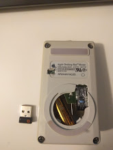
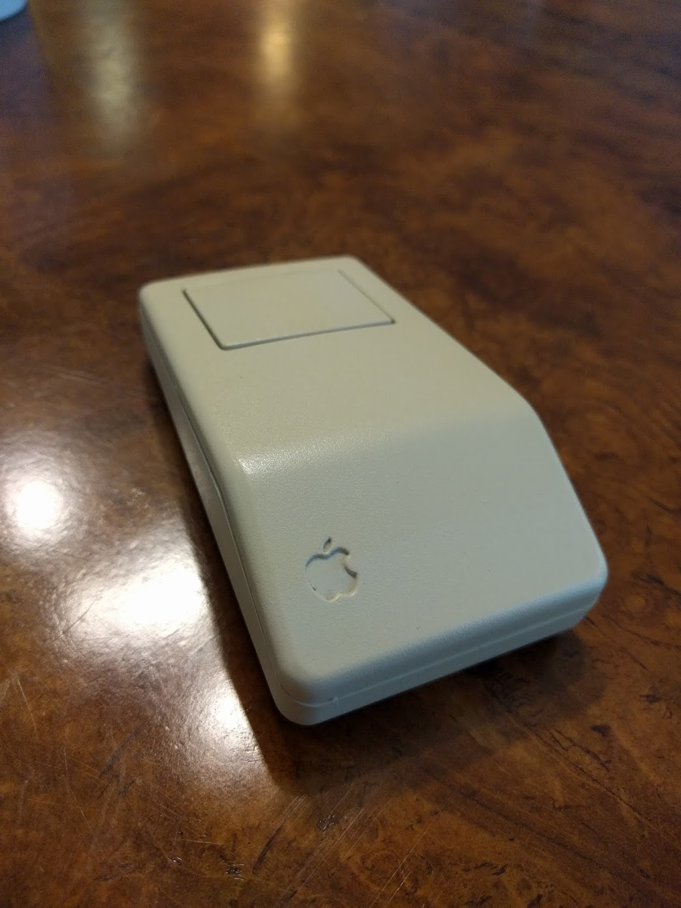
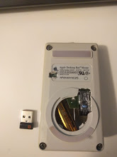
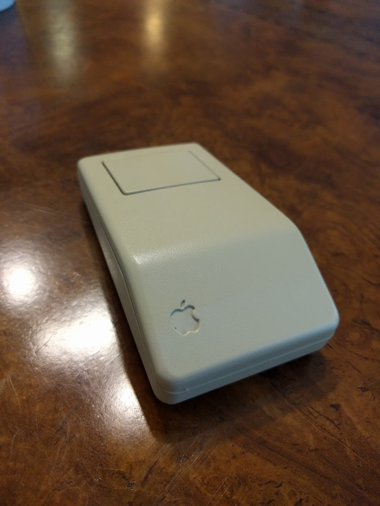

Projects Page
HomeLasertag PCB
I designed, built & coded a lasertag board.
Automated Planter
Me and some friends got together to build an automated planter. I wrote the environment control firmware and researched circuits for pump & valve control.
Web-controlled RC Car
I made a web-controlled RC car. I soldered a microcontroller to the car's remote to gain automated steering and then conntected the microcontroller via websockets to an azure backend, allowing the car to be controlled from anywhere. Demo video here.
Wireless Retro Apple Mouse
 



I took the insides of an old retro apple mouse and replaced them with the guts of a modern wireless mouse. I 3D-printed a custom housing so that the electronics would fit together. Demo here.
Digital Nishika Remake
The Nishika is an old film camera from the 80's. The camera was unique in its ability to capture the same image simultaneously from several different lenses. This allowed the film, when developed, to give you a "3D" perspective effect by cycling left and right between the images from the lenses quickly. Me and a friend got together to build a digital equivalent. We connected two cameras to a raspberry pi and fixed them to a rigid acrylic harness. We wrote a simple python script to combine images from the two cameras into a gif which cycles back and forth rapidly, giving the same digital effect.